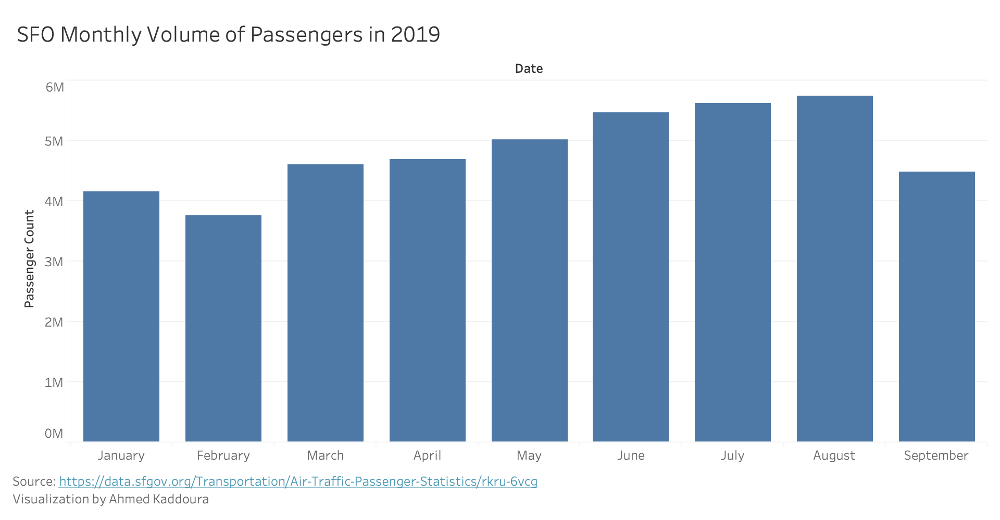
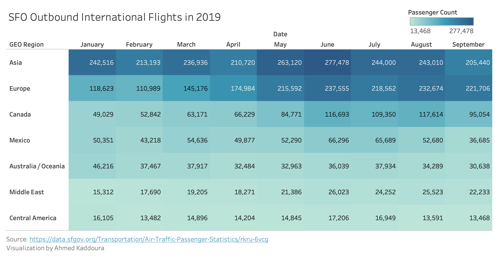
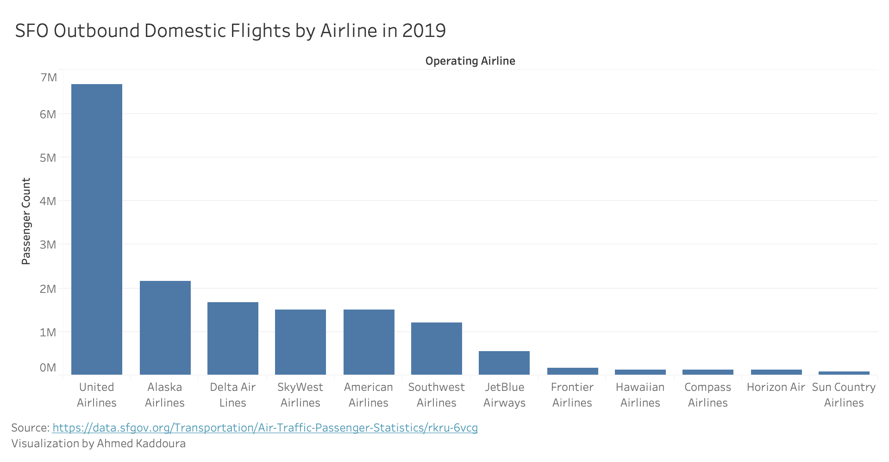

Prototypes
Created in Tableau Desktop
In this visualization, passenger count is encoded by the length of the bar, so longer bars represent higher passenger count.
I used data from the activity period column which I parsed into a date and took the month of on Tableau. I limited the data for this visualization to months in 2019 on the DataSF website. I also used the passenger count column which I summed based on the activity period.
Using the visualization, I have come to the conclusion that summer is the busiest time of year for flights at SFO.
A d3.js visualization of this prototype can be found under "Visualization 1"
 In this visualization, passenger count is encoded by the length of the bar, so longer bars represent higher passenger count.
I used data from the operating airline column and the passenger count column. I filtered the data to only show domestic flights in 2019 and summed the passenger count by airline on Tableau.
Using the visualization, I have come to the conclusion that United Airlines was by far the most popular airline for domestic flights out of SFO in 2019. I have also concluded that there are three general tiers for airline popularity in this category: the top tier has one airline (United Airlines), the second tier has 5 airlines, and the bottom tier has 6 airlines.
A d3.js visualization of this prototype can be found under "Visualization 2"